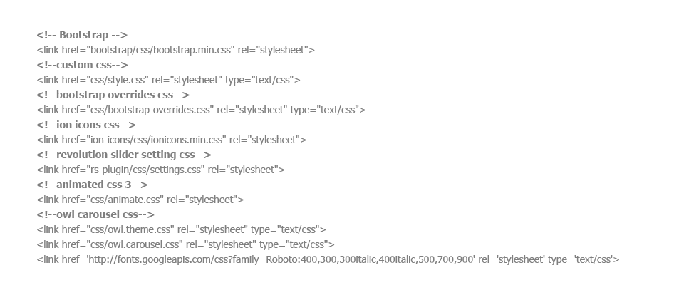
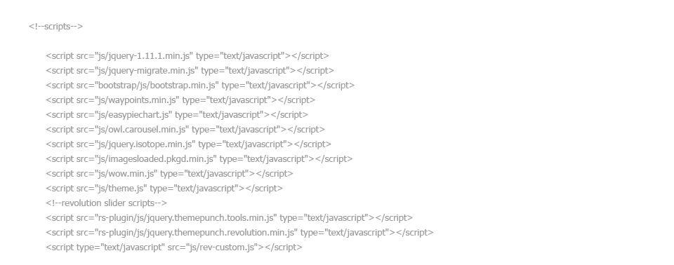

Thank you for purchasing this theme. If you have any questions that are beyond the scope of this help file, please feel free to contact us. Thanks so much!
This Theme has a Responsive layout with a variation of column layouts depending on the page. This theme uses the 1170 grid system (12 columns) which will help streamline any customization you wish to make.
I'm using one main CSS file (style.css) in this theme which you are free to modify depending on the customization you require. There are also Four additional style sheets that I do not recommend changing. Those style sheets reside in the 'CSS' folder.
Other css files includes
I'm using the ion icon fonts, includes into the ion-icons folder into the theme. Go to the official website for more information - http://ionicons.com/
<a href="https://www.facebook.com"> <i class="ion-social-facebook"></i> </a>
Here you can modify any settings for ( Sliders, Charts, and more..)
Js files includes

The images used on the demo site are for demonstration purposes only and are not included in the download file. We have included placeholder images for each instance.
All images are contains into the images folder.
<body class="boxed">
<div class="main-boxed-wrapper">
put your all page content goes here
</div>
</body>
JQUERY - Jquery library
BOOTSTRAP - any information about bootstrap grid system, tabs, collapse etc
ICONS - we use the ion icons into this theme, for more information, visit this link
ANIMATIONS for css3 animations, if you want on scroll animation effects you must need this jquery plugin WOW
ISOTOPES - for portfolio filters
EASY PIE CHARTS - Get the detailed information here
OWL CAROUSEL - for item, images etc sliders, Uses in latest news section into home page
WAYPOINTS - for digit counters
If you have any question about this template, feel free to contact at profile page
© 2015. codeflicks
Version v1.0 - initial release